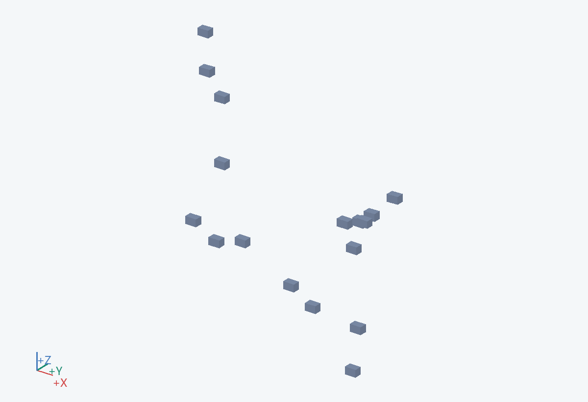
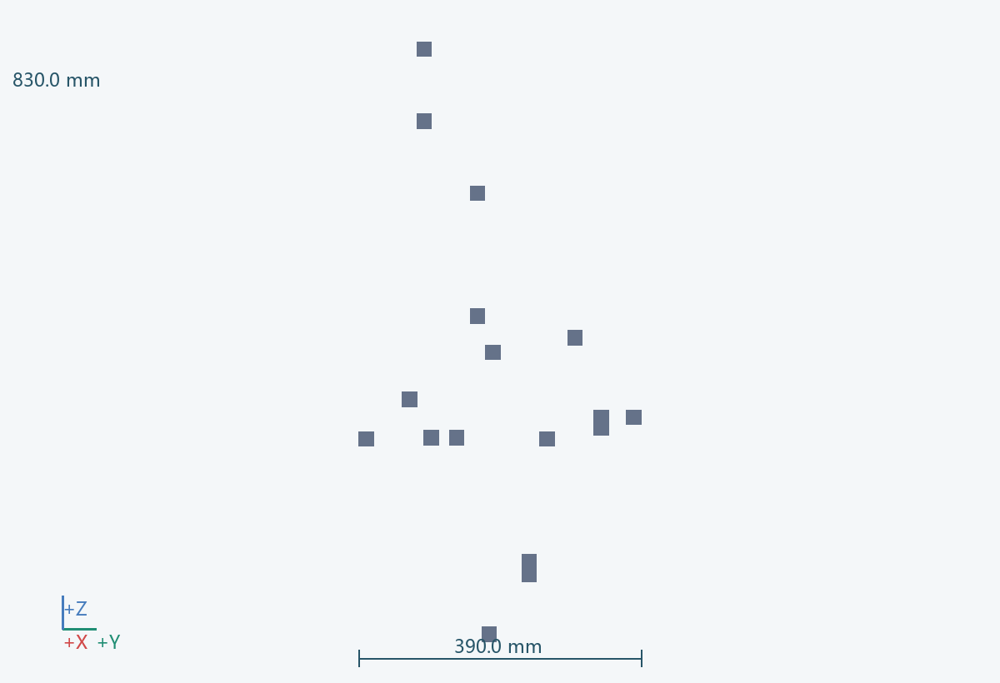
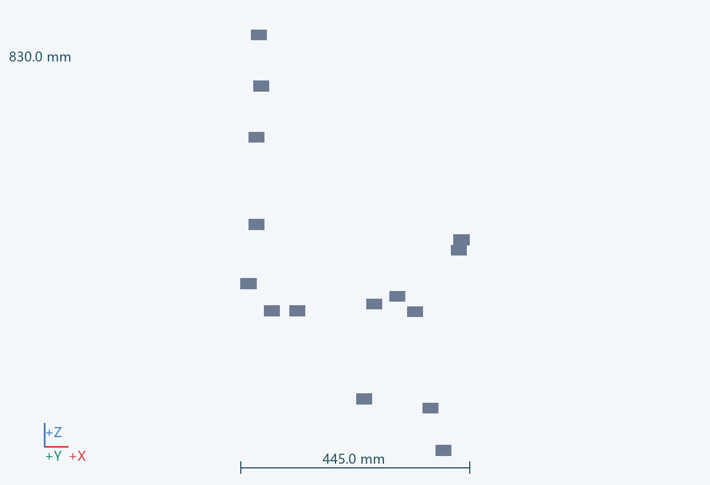
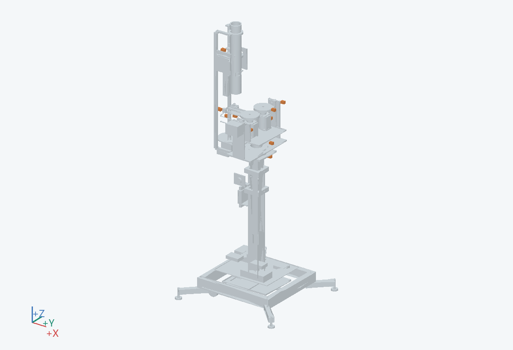

445.0 × 390.0 × 830.0 mm（含所示实例）
确认运动到位、有球/出球和盖板状态。
覆盖导套上下位、滑台位置、夹持、偏航/俯仰回零与限位、出球和开盖。
光电、限位、编码反馈与开盖检测的器件族
传感头可调整，电缆接头可达。
有球信号不等于恰好一球；检测结果需和机械分离、状态顺序共同判断。 关联：U09
PRT-0905__SEN-01, PRT-0905__SEN-02, PRT-0905__SEN-03, PRT-0905__SEN-04, PRT-0905__SEN-05, PRT-0905__SEN-06, PRT-0905__SEN-07, PRT-0905__SEN-08, PRT-0905__SEN-09, PRT-0905__SEN-10, PRT-0905__SEN-11, PRT-0905__SEN-12, PRT-0905__SEN-13, PRT-0905__SEN-14, PRT-0905__SEN-08_R, PRT-0905__SEN-10_DOWN, PRT-0905__SEN-12_HOLD